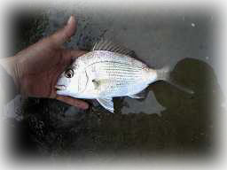
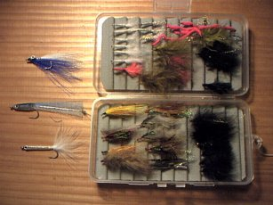

釣行日誌 ＮＺ編
生まれて初めて鯛を釣る
2000/01/07（日） オークランド郊外の浜辺にて
あっけなく西暦2000年は明けて、ナイキのＣＭのような暴動、パニック、軍隊の装甲車、銀行のＡＴＭからあふれ出す札束に群がる人々、動物園から逃げ出したキリン、宙を飛ぶ米・ロの核ミサイル、そして忍び寄るメルトダウン原発からの放射能も無く、オークランドの正月は静かだった。
正月休みの延長で学校は９日まで休み。しかしバスは平日運行ということで、１月７日は５時半に起き、朝靄をついていつもの浜に出かけた。乗客わずか２名、道路はガラガラのため、わずか15分で着いた。バスで魚釣りに行く利点は、釣れても釣れなくても時間通りに帰らなくてはならないので、あきらめが付けやすいことである。
遊歩道をトコトコと降りて行くと、いつもは家族連れやらヌーディストやらでにぎわう浜には、予想通りだれもいなかった。
ゆったりとデイパックを降ろし、スピニングロッドに餌釣りの仕掛けをセットし、ウェアハウス（ＮＺの全国チェーンのホームセンター）で買った缶詰のバラクーダの身を餌に付けて期待の持てそうなポイントに投げ込んだ。後は10ポンド（約4.5kg）の鯛がかかるのを待つだけである。
ボーゼン......と待っていてもしょうがないので、久しぶりにフライロッドを継いで、ソルトウォーターフライを楽しむことにする。50cmのカウワイでも掛かればそれこそお祭り騒ぎなのだが、春から夏にかけてどうもここでのカウワイ釣りは芳しくなかったので、あまり期待は持てない。
で、ふと水面を眺めると、無数の小魚体長約3cmが満ち潮にのって水際をピチピチと群れなして泳いでいる。が、しばらく観察したものの、それらを追って海底から急浮上する銀影は見あたらなかった。まぁともかく、薄曇り、無風、新月、満潮前で早朝！ という絶好の条件なので、釣果は別として、フライ「キャスティング」を楽しむことにする。
ラインはシンキングのタイプ２、リーダーは３Ｘを1.5m、フライは小魚に似た白いマラブーを結び、カミツブシを２個かます。サングラスをかけ、つばの広い帽子を耳までしっかり被る。（以前、ここで自分の耳を釣って以来、極めて用心深くなったのである。）
買った当初は「固いなぁ」と思ったキルウェルの６番もすっかり腕に馴染んでラインがここちよくバットに乗る。シュートしたラインがシュルシュシュシュシュル.......と飛んで着水し、ズンズンと沈んで行く。
オークランドの釣具店のマネージャーでもあり、ニュージーランドフィッシングニュースという人気釣り雑誌のスタッフでもある Patrick Langevad 氏によれば、「適切な釣り場を選び、適切なタックルで上手に釣れば、型の良い（30～40cm級）の鯛を一日に十尾以上、フライで釣ることもできる......」という。また、Sam Mossman 氏の書いた、Saltwater Sportsfishing という本では、フライフィッシングの章の冒頭に、「海でのフライフィッシングを習い始めるときの黄金律は、溢れるほど魚のいる場所で釣ることである。成功は何にも勝る励ましとなり、カウワイの群れの前で２時間釣ることは、どんな本よりも多くのことをあなたに教えてくれるだろう」
と記されているのである。
溢れるほどの魚（体長3cm）が群れ、トラウト用のロッドとラインを振りかざし、あまり上手には釣れない私の前にはどんな幸運が待っているのだろうか......
パトリックさんの話によれば、鯛はけっこう底近くにフライを沈めないと難しいそうなので、潮の上手にキャストしてから忘れてしまうくらいカウントダウンして、下手に流れきってからおもむろにリトリーブを始める。本当に何か釣れるのかぁ......と疑心暗鬼になりかけていると、コツコツ、コッツンと小さな当たりがある。うーん？？？と思っていると、サヨリに似たパイパーという20cmほどの魚が最後までフライを追って来るのが見える。しかし、彼らは口が小さいのでなかなかフックアップに至らない。マ、音信不通よりは良いであろう。
飽きずにキャストしていると、突然小気味よいカッツン！という当たりとともに竿が絞り込まれる。うーん？何だ何だ？と思ってとりあえず合わせをくれて、ラインを手繰り始めると、なかなかどうして、リールでファイトしなければ！ と思わせるほど力強く引き込んで行く。秋にジグで釣ったカウワイほどではないが、ククククーッギュンギューンと華麗にファイとする。ほっほーっ！と歓声を上げてリールを巻いてくると、なんと緑色の水底からピンク色の肌と青い斑点も鮮やかに立派な鯛が最後の抵抗を見せて上がってきた。
「うぉーっ！ やったぜ！ 鯛だ鯛だ！」

体長20cmあまりとは思えない（笑） 豪快な引きを楽しませてくれた鯛は、掌の上でビチビチビチッと跳ねまくり、フックを外してやると一目散に水中へ帰っていった。
『ふーむ。釣れるもんだなぁ....』
腐っても鯛....という諺は本当であった。まして生きのいい鯛をフライロッドで釣ることができたので望外の喜びである。それに、何を隠そう鯛を釣ったのも生まれて初めてなのである。
調子に乗って同じ辺りにキャストして同様にリトリーブしてくると、さらにコツン！と反応があり、すかさずの合わせに乗って華麗な躍動が再び始まる。
『うーん、最高っ！！』
人気のない金曜日の朝の浜に、聞き慣れぬ日本語の歓声が上がる。眼前正面にはたおやかな山裾の広がるランギトト島が悠然と浮かび、左手にはスカイタワーを初めとするダウンタウンの高層ビル街が朝靄の中に聳え、歩いて渡れるのではないかと思えるほど静かな水面に小鯛が飛沫を上げる。
などと数尾の鯛を釣った後、さあてバックキャストを....と思ってふと後ろを見ると、すぐ後ろにいきなり大男が立っていて驚いた。
「グッドモーニング！ 何か釣ったかい？」
「ぐ、ぐっどもーにんぐ。 いやぁ、鯛の入れ食いですよ」
などとカマすと、大男氏は垂れ下がったフライやライン、ロッドをしげしげと見たあとで、
「いやぁ、海でフライをやってる人を初めて見たなぁ！」
と感動の面もちである。彼はビルさんといい、ネーピア（ＮＺ北島東海岸にある街）から正月休暇でオークランドの兄の家に遊びに来ており、たまたまジョギングをしていたら釣り人が見えたので浜に降りてきたとのこと。
彼に間近で見られてやや緊張したのだが、３回のキャストでラインがきれいにシュートできたので安心した。
「ほほう、上手だねぇ」
その言葉の後ろにかなりの経験とゆるぎない自信を感じてしまい、密かに恐れおののく。おまけに彼はロトルア近郊の聞いたことのない湖の名前や、あの有名なモハカ川でゴムボート・ドリフティングによる鱒釣りを楽しんだなどと武勇伝を繰り出すのである。さらに彼は熱心に私のロッドを見て、
「ふーん、本物のカーボンロッドだな....」
などと呟く。
『むむむ、この御仁はバンブーロッドしか持ってないに違いない』
と、またまた恐れ入る。そこで、彼に試し振りを勧めようと、シャカシャカと早めにリトリーブしてくると、何と！ またしても小鯛がヒットしてしまった。
「あははぁ、このサイズなんですけど面白いですよ！」
「ほほーう、けっこう引くねぇ！ こりゃ楽しそうだな」
取り込んだ後でピチピチの鯛を一緒に眺めてから、
「どうぞ、良かったらこの竿を振ってみて下さい」
と、勧めると彼は、
「オー！ サンキュー！」
と、おもむろにキャストを始めた。
『ふーむ.......』
その姿にかなりの満足とゆるぎない優越を感じてしまったが、密かに己の心の中だけに留めた。（笑）
「いやぁ、６月にこの竿買ったときは嬉しくてですね、さっそくここへ来て振ってたら自分の耳を釣っちゃって...」
「おおっ！ そうかそうか。 耳で良かった。 オレなんかタウポで釣ってた時に、一緒に連れてったリトリーバーを釣ったぜ。あれ以来うちの犬は釣りに付いて来なくなったよ！ けどスッゴク引いたぜ（笑）」

自分の耳と愛犬と、どちらを釣るのが痛ましいかは別として、いろいろと話が弾んだ。彼のリクエストにお答えして私の粗末なフライボックスを見せると、しごく感心した様子で全てのフライの名前を尋ねてくる。なかなかの研究家らしい。
ひとしきりしゃべった後でビルは、「人さらい岬」というネーピアの丸秘ポイントを教えてくれてから、足取りも軽くジョギングに戻っていった。
一期一会とは言え、楽しい人だったなぁ....と思い、再び自分の釣りに没頭する。満潮の前後30分ぐらいはしばし当たりが止まったが、潮が引き初めてまた何尾かを釣った。また、目標外ではあるが、ベラやボラに似た魚が釣れた。
さて、のどかな浜辺もお日様が高くなるといろいろな人が訪れるようになり、なんと顔に見覚えのあるヌーディスト某氏も現れた。（笑）
「むむむむむ......」
心中の複雑さを密かに隠す私を知ってか知らずか、彼はいつも通り大胆に一糸纏わぬ姿となり、おもむろに奥の芝生近くに寝そべったようだ。（とても直視する気にはなれない.....）
雑念を振り切り、雑魚の猛追も振り切り、ひたすら鯛の当たりを求めてキャストとカウントダウン、そしてリトリーブを繰り返す。
が、しかし、件の某氏は、あたりに私以外いないことをいいことに、なんと私がキャストしている場所のすぐ後ろにやってきてバスタオルを広げ、「超」大胆に、日本ならばすぐにパトカーがやってくる姿態を見せつけ始めたらしい。（気配で彼の接近と挙動を感じ、チラッと見ただけだが...）
引き潮で少し早く動き始めた潮流と海底の小鯛の群れにはいたく心を惹かれたが、私の力無いバックキャストでは、自分の耳や、愛犬や、その他地球上のほとんどの物体よりもはるかに大切な、人様の持ちモノを釣ってしまいそうな気がしたので、そそくさと釣り具を仕舞い、あえて浜を後にした。
ああ、無念.........
釣行日誌ＮＺ編 目次へ
サイトマップ
ホームへ
お問い合わせ